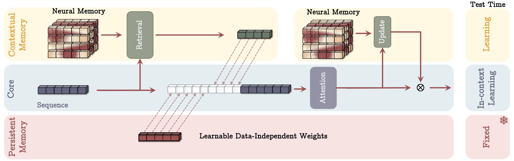
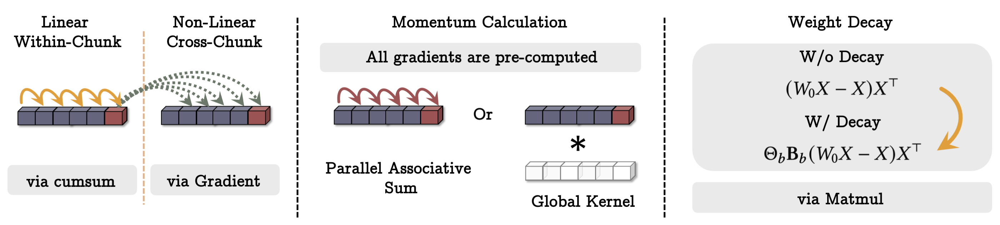
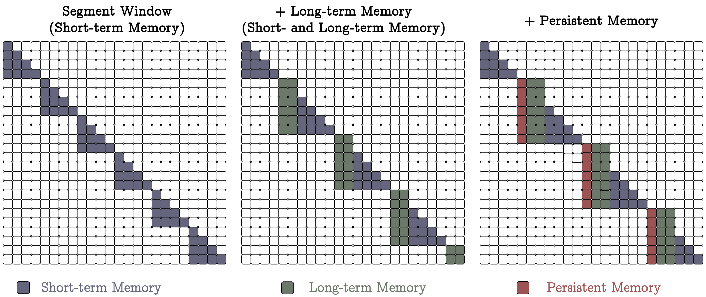
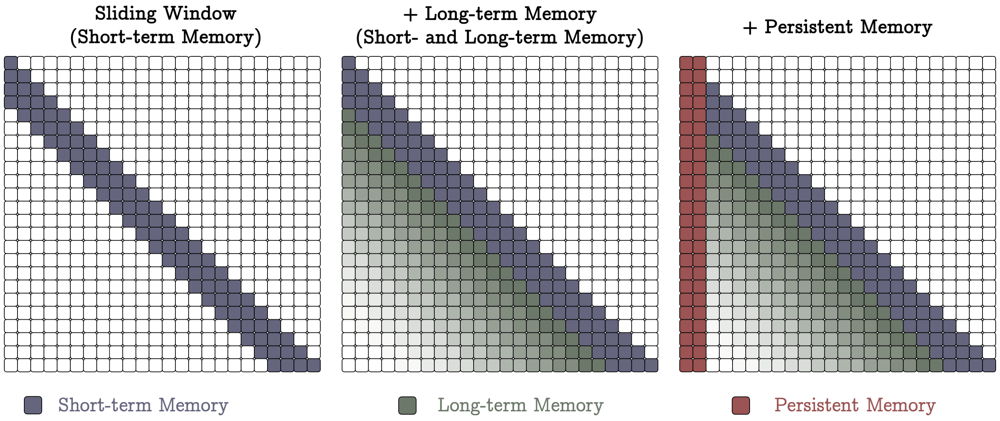
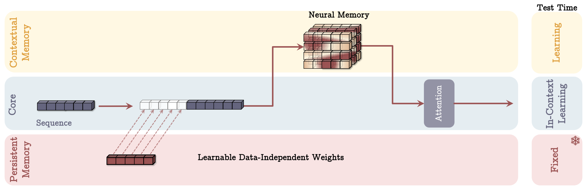
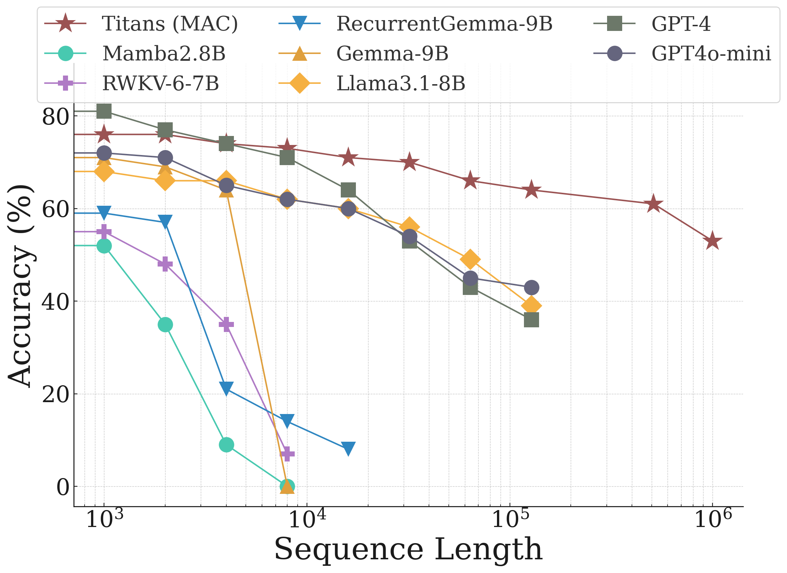
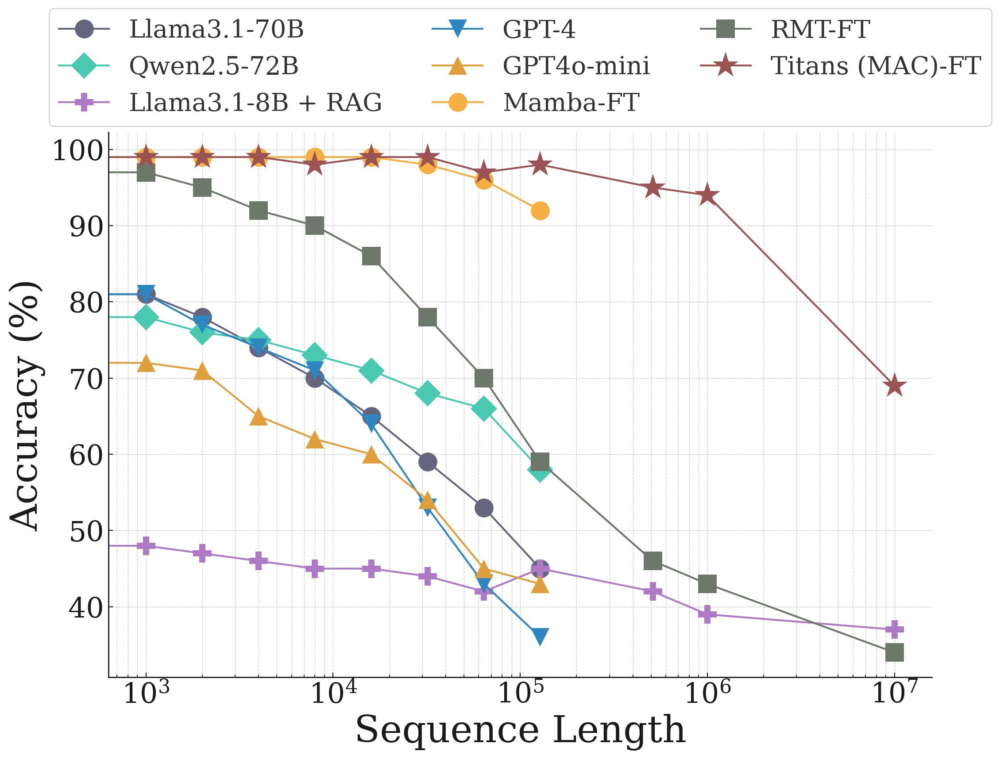

An interactive explainer
Titans: Learning to Memorize at Test Time
Transformers attend; recurrent models compress. Titans propose a third way: a long-term memory that is itself a neural network, whose weights get updated by gradient descent at inference time. Every token you read leaves a trace. Surprising tokens leave bigger traces. The memory has momentum, so a single shock keeps writing for a while; it has weight decay, so old facts can be released. The whole thing parallelises into matmuls, scales to 2M+ token contexts, and lets a 760M-parameter model beat GPT-4 on the BABILong long-context reasoning benchmark.

For the last seven years, sequence modelling has been a fight between two memory systems. On one side, attention: keep every token around, re-read them all every time you predict the next one. On the other side, recurrence: squash all of history into a single fixed-size vector or matrix that the network updates step by step. Attention is precise but quadratic. Recurrence is linear but lossy. Mamba, RWKV, Gated DeltaNet, and TTT have spent two years iterating on the recurrence side without catching the Transformer at scale.
Titans, from Google Research, propose something stranger. Instead of compressing history into a vector, they compress it into the weights of a small neural network that lives inside the larger model. As the larger model reads a long sequence at inference time, the inner network literally trains on the (key, value) pairs it sees. Each token generates a gradient step. After a few thousand tokens, the inner network's weights encode the sequence's content. When you want to retrieve something, you do a forward pass on the inner network with a query. There is no KV cache, no fixed-size hidden state in the usual sense — just a small model whose parameters carry the past.
The result is the first architecture that combines attention's accuracy on the recent context with a truly persistent long-term store, in a way that runs in linear time and parallelises to matmuls. Titans scale past 2M tokens and outperform much larger Transformers on long-context reasoning. A 760M-parameter Titan fine-tuned on BABILong beats GPT-4, Llama3.1-70B with RAG, and Qwen2.5-72B. They get there by treating "training" and "inference" as the same thing.
The whole thing is also conceptually clean. Once you accept that the memory module is a neural network being trained on the fly, every other choice in the paper — momentum, weight decay, parallelisation tricks, where to put the memory in the bigger architecture — falls out of standard deep-learning intuitions. That's what this explainer walks through.
1. Attention vs RNNs: a memory-systems view
To see what Titans add, it helps to put existing architectures into a common frame. The paper's framing is that every sequence model has a memory state, an update rule, and a retrieval rule. The differences are about what each of those three things looks like.
Transformers have growing memory and no compression. The "memory state" at position $t$ is just the list of all past keys and values $\{(k_i, v_i)\}_{i \le t}$. The update rule is append. The retrieval rule is softmax attention. This is precise — every past token can be looked up individually — but the memory grows linearly with sequence length and retrieval is quadratic in it.
Linear Transformers and linear RNNs (Mamba2, GLA, RetNet, Gated DeltaNet) have fixed memory and compress aggressively. The memory state is a single matrix $W \in \mathbb{R}^{d \times d}$. The update rule writes the next key-value pair into $W$ with some kernel. The retrieval rule is a single matrix-vector product, $y = W q$. This is cheap — constant memory, linear time — but information collides. Past tokens overwrite each other in $W$, and there is no way to "look up" a specific old token if its address has been clobbered.
Titans sit in between. The memory is neither a list of vectors nor a single matrix. It is a small MLP $\mathcal{M}$ with two or more layers and learnable weights. The update rule is one step of stochastic gradient descent on a memorisation loss. The retrieval rule is one forward pass through $\mathcal{M}$. This buys two things that linear RNNs don't have: (a) the memory's expressive capacity is set by network depth, not by the dimension of a vector; (b) the memory is a non-linear function of its inputs, so collisions are not literal additive overwrites.
2. Memory as a neural network
Here is the core move. The long-term memory module $\mathcal{M}$ is a small MLP. Its weights $\theta_\mathcal{M}$ are not frozen at the end of pre-training; they keep updating as the larger model reads input at test time.
To make this concrete, define an associative-memory loss. For an incoming token $x_t$, project it through learnable matrices $W_K, W_V$ to get a key $k_t = x_t W_K$ and a value $v_t = x_t W_V$, just like attention does. Now define the memory's loss at time $t$ as:
$$ \ell(\mathcal{M}_{t-1}; x_t) \;=\; \big\| \mathcal{M}_{t-1}(k_t) - v_t \big\|_2^2. $$
Read this as: "if the memory $\mathcal{M}_{t-1}$ already knew this token, calling it with the key $k_t$ would produce the value $v_t$." A high loss means the memory doesn't know about this key. So a high gradient $\nabla_\theta \ell$ tells the memory it should update its weights.
The simplest possible update rule, then, is one gradient descent step:
$$ \mathcal{M}_t \;=\; \mathcal{M}_{t-1} \;-\; \theta_t \cdot \underbrace{\nabla_\theta \ell(\mathcal{M}_{t-1}; x_t)}_{\text{surprise}}. $$
The gradient acts as a "surprise" signal. If the memory predicts $v_t$ accurately, the gradient is near zero and the weights barely move — there's nothing to learn. If the memory is wrong, the gradient is big, and the weights shift a lot in that direction. This is exactly the human memory intuition the authors invoke: events that violate your expectations are more memorable.
The widget below shows this happening token by token. The grid represents $\mathcal{M}$'s weights. Each incoming token has a surprise level you can pick. Surprising tokens stamp the memory harder.
Two parameter sets, two learning rates
Take a careful look at the symbols introduced so far. The update rule for $\mathcal{M}$ uses $W_K$, $W_V$ to build $k_t$ and $v_t$, and starts from some initial weights $\mathcal{M}_0$. None of those things appear in the loss as something to be optimised by the inner step — only $\mathcal{M}$'s parameters $\theta_\mathcal{M}$ do. That's deliberate. Titans has two parameter sets that learn on different timescales:
| Set | What's in it | When it updates | How |
|---|---|---|---|
| Slow / outer | $W_K$, $W_V$, $W_Q$, the projections, the attention block, $\mathcal{M}$'s initialisation $\theta_\mathcal{M}^{(0)}$, momentum and forgetting gates, persistent-memory tokens | Pre-training, regular SGD across batches | Standard backprop on the next-token prediction loss |
| Fast / inner | $\theta_\mathcal{M}$ — the memory MLP's weights | Every token, including at test time | One gradient step on $\ell(\mathcal{M}_{t-1}; x_t)$ |
At the start of every sequence, the fast set is reset back to the slow set's learned $\theta_\mathcal{M}^{(0)}$. Then the inner-loop SGD runs token by token, writing memories into the MLP as the sequence streams in. At the end of the sequence the fast set is thrown away.
This split is the source of all confusion about the setup, so it's worth being concrete. During pre-training of the whole model:
- Pick a training sequence of $T$ tokens.
- Initialise $\theta_\mathcal{M} \leftarrow \theta_\mathcal{M}^{(0)}$ (the current slow init).
- For $t = 1, \dots, T$: form $k_t, v_t$ using the current $W_K, W_V$; run one inner-loop gradient step on $\ell(\mathcal{M}_{t-1}; x_t)$ to obtain $\theta_\mathcal{M}^{(t)}$; let the rest of the model consume $\mathcal{M}_t$'s outputs to predict $x_{t+1}$.
- Accumulate the next-token loss across all $T$ predictions. This is the outer loss.
- Backpropagate the outer loss through the entire unrolled inner loop into the slow parameters: $W_K, W_V, W_Q$, the attention block, and $\theta_\mathcal{M}^{(0)}$.
- Take one outer SGD step on the slow parameters.
Step 5 is the heart of the matter. The outer gradient flows through every inner update — what computer-science people call differentiating through the optimiser. The slow parameters receive a learning signal that says: "your job is to be such that, when this inner loop runs at test time, the memory it produces is useful for prediction." This is exactly meta-learning, in the precise sense of MAML and learned optimisers: an outer loop that adjusts how the inner loop learns.
Why this isn't a plug-in for existing LLMs
An obvious question: could you take a pre-trained transformer, freeze it, and bolt the memory module on the side? No. Without the meta-training step, $W_K$, $W_V$ and $\theta_\mathcal{M}^{(0)}$ have never been taught what's useful to write into the memory. A randomly-initialised key projection paired with a randomly-initialised MLP, run for one gradient step per token, produces noise. The rest of the network has no reason to consume that noise, and gets no signal to learn how to use it.
Two realistic deployment options are available:
- Train from scratch as one of the Titans variants (MAC / MAG / MAL — covered below). The paper does this.
- Warm-start the attention block from a pre-trained transformer's weights, then run a substantial continued-pre-training phase where the memory module learns to cooperate with the rest of the model. Subsequent papers in the meta-learned-memory family take this route.
The architectural footprint at inference is small — one extra MLP per layer, plus the inner-loop optimiser state. But the training cost is real, because pre-training has to unroll the inner loop to differentiate through it. Unrolling a 4K-token sequence means 4K inner-update steps per outer backprop pass.
Why the trivial solution doesn't win
Here is a worry that should have occurred to you. The inner loss $\ell(\mathcal{M}; x_t) = \| \mathcal{M}(k_t) - v_t \|^2$ has a trivial zero. Set $W_V = 0$, set $\mathcal{M} \equiv 0$, and the loss is zero forever. Why doesn't the system collapse to this?
Because the inner loss is not the training objective. The outer loss is — and the outer loss is the next-token prediction loss for the whole language model, which only sees $\mathcal{M}$ through its outputs. If $\mathcal{M} \equiv 0$, the memory contributes nothing useful to predictions, the outer next-token loss is bad, and the meta-gradient pushes $W_K$, $W_V$, and $\theta_\mathcal{M}^{(0)}$ away from the trivial fixed point. The inner loss is just a mechanism for updating $\theta_\mathcal{M}$; it has no preferred minimum the outer loop cares about, except inasmuch as the resulting $\mathcal{M}$ is good for next-token prediction.
In other words: the outer loop is pickier than the inner loop. The inner loop will happily settle for any $\theta_\mathcal{M}$ that fits the current $(k_t, v_t)$ pair. The outer loop demands that the $\theta_\mathcal{M}$ produced by running the inner loop be informative downstream. Those two pressures together rule out the degenerate solution.
Where does the memory function — i.e. the ability to retrieve $x_t$ later from a related query — come from? From the fact that $W_K$ and $W_V$ are frozen at test time. They define a fixed addressing scheme. When the model writes "value of token $x_t$ at key $x_t W_K$" and then later sees a similar token $x_{t'}$, the query $x_{t'} W_K \approx x_t W_K$, so calling $\mathcal{M}(x_{t'} W_K)$ returns something close to $v_t = x_t W_V$. The meta-trained $W_K$, $W_V$ are responsible for making "similar" mean something useful — that is, for putting the right tokens near each other in key space. The MLP $\mathcal{M}$ is just a lookup table built on top of that scheme, fast-updated as new associations stream in.
3. Surprise, momentum, and forgetting
The naive single-gradient-step rule has two failure modes. First, after a really surprising token, the memory has moved to a place where the gradient is small — and now subsequent surprising-but-related tokens look uninteresting and get under-written. The memory has "exhausted its reaction" too quickly. Second, when the topic of the sequence shifts (say, the document moves from chapter 1 to chapter 2), old memorised facts can no longer be useful, and continuing to write them just wastes capacity.
Both problems have known fixes from optimisation. The first is fixed by momentum: keep a running average $S_t$ of recent gradients, and update the memory using that instead of the instantaneous gradient. A single surprise then keeps writing for several steps. The second is fixed by weight decay: at each step, shrink $\mathcal{M}_{t-1}$ toward zero before adding the new surprise term, so old memorised content can be released.
Put both together and the update rule becomes:
$$ \mathcal{M}_t \;=\; (1 - \alpha_t)\,\mathcal{M}_{t-1} \;+\; S_t, $$
$$ S_t \;=\; \eta_t\,S_{t-1} \;-\; \theta_t\,\nabla_\theta \ell(\mathcal{M}_{t-1}; x_t). $$
Three data-dependent gates control everything:
- $\theta_t$ is the learning rate — how strongly the current surprise is mixed in.
- $\eta_t$ is the momentum coefficient — how much of past surprise persists. Setting $\eta_t \to 0$ lets the memory "forget the last surprise" (e.g., at topic boundaries). Setting $\eta_t \to 1$ lets it ride.
- $\alpha_t$ is the forget gate. With $\alpha_t \to 0$, the past memory is preserved verbatim. With $\alpha_t \to 1$, the memory is wiped before the new step is applied.
All three are produced from the current token by learnable projections, so they adapt in context. You can think of them as a tiny controller that decides, for each token, "how surprising is this really, does it ride the prior surprise, and should I clear room first?"
The authors point out that this exact rule is mathematically equivalent to the gating mechanisms in modern recurrent models. Mamba2, Gated DeltaNet, and friends can all be re-derived as special cases where the "memory" is a vector or matrix and the "loss" is a particular quadratic. Titans generalises the picture: when the memory is allowed to be a deeper non-linear network, the same gradient-descent recipe gives you something strictly more expressive.
4. Parallelising gradient descent into matmuls
So far the memory updates itself one token at a time: read a token, take a gradient step, read the next token, take another step. That is a fine description of what should happen. It is a terrible description of how to run it on a modern chip. This section is the engineering trick that bridges the gap — and it is the part of the paper most worth slowing down for.
Why one step per token is painfully slow
Look at the update rule once more. $\mathcal{M}_t$ is built out of $\mathcal{M}_{t-1}$, which was built out of $\mathcal{M}_{t-2}$, and so on all the way back to the start. Every memory state needs the one right before it to exist first. It is a row of dominoes: domino number 5,000 cannot fall until domino 4,999 has already fallen.
A GPU is the wrong shape for dominoes. These chips carry tens of thousands of little arithmetic units, and they are happiest when you hand them one giant multiplication of two big grids of numbers — a matrix multiply, or "matmul" for short — which they can spread across all those units in the same instant. Hand them instead a chain of 100,000 tiny steps, each one forced to wait for the previous, and almost the entire chip sits idle. Trained this way, a Titan would crawl along at the speed of an old recurrent network — exactly the slowness it was built to escape.
So this section is really a translation problem. The computation has to stay the same. The form it is written in has to change: from a long chain of tiny steps into a short stack of big matmuls.

The fix: work in chunks, and tell one small white lie
Start by cutting the sequence into chunks of a fixed size $b$ — picture 100 tokens per chunk. We will still walk through the chunks in order, but a sequence of $N$ tokens is now only $N/b$ chunks. If we can make all the work inside a chunk happen at once, we have shortened the domino chain from $N$ steps to just $N/b$ steps.
The obstacle has not vanished, though. Inside a chunk, token 2's gradient is still supposed to be measured against the memory after token 1 has updated it. Drawing boxes around groups of dominoes does not stop them from falling in order.
Here is the white lie that breaks the deadlock. Within a single chunk, pretend the memory does not change at all. Every token in the chunk measures its gradient against the very same snapshot of the memory — the snapshot taken at the start of the chunk, which we will call $W_0$. The memory is genuinely updated only once per chunk, at the boundary, using all $b$ gradients together.
Why are we allowed to lie like that? Because over a short span — 100 tokens, not 100,000 — the memory drifts only a little, so the start-of-chunk snapshot is a good-enough stand-in for every token in the chunk. In optimisation language, we have swapped fully online updates (re-measure after every single token) for mini-batch updates (measure a batch of $b$ against one fixed point, then take a single combined step). It is exactly how a teacher grades a stack of 100 exams: strictly speaking they learn something from exam 1, but they mark all 100 against the same answer key and revise the key once, at the end — not after every paper. This chunk-and-freeze idea is borrowed from the Test-Time Training line of work; Titans' own additions are the momentum, forgetting, and data-dependent dials layered on top of it.
And this small lie buys everything. The moment all $b$ tokens are measured against the same fixed $W_0$, their gradients stop depending on one another. Nothing inside the chunk has to wait for anything else inside the chunk. They can all be computed together — which is precisely the door into matmul land.
Step one: the gradients become a single multiply
Take the simplest possible memory first — a plain matrix $\mathcal{M} = W$. One token's gradient turns out to be an outer product: take how wrong the memory was on that token, and multiply it against the token's key. Written out:
$$ \nabla \ell(W_0; x_t) \;=\; (W_0\,k_t - v_t)\;k_t^\top. $$
The piece $W_0 k_t - v_t$ is just "what the memory guessed, minus what it should have guessed" — the miss, or residual.
Now do all $b$ tokens of the chunk at once. Stack them side by side into one grid: a matrix $X$ whose columns are the chunk's tokens (the keys and values are formed from it). Watch the loop dissolve:
- $W_0 X$ — one matmul — produces the memory's guess for every token in the chunk at once.
- $W_0 X - X$ — one subtraction — is every miss at once.
- $(W_0 X - X)\,X^\top$ — one more matmul — adds up all $b$ outer-product gradients into a single correction for the memory.
What had been a 100-step loop is now two matmuls and a subtraction. The chip is busy.
Step two: the per-token dials become a diagonal
One detail is still missing. In the previous section, every token carried its own dials: a learning rate $\theta_t$, and — through the forget gate $\alpha_t$ — its own decay. A token's gradient should not be added in raw; it should be weighted by those dials. So we cannot simply sum the gradients evenly.
The forgetting also compounds. Write $\beta_i = (1-\alpha_1)(1-\alpha_2)\cdots(1-\alpha_i)$ — the fraction of an early gradient that is still alive after the chunk has applied its forget gate over and over. A token near the start of the chunk has been decayed many times; a token near the end, barely at all. The ratio $\beta_b / \beta_i$ is exactly how much token $i$'s contribution should be shrunk by the time we reach the end of the chunk.
Here is the trick: a list of per-token numbers can be carried as a diagonal matrix — the numbers laid along the diagonal, zeros everywhere else. Multiplying by such a matrix simply rescales each token's slice, one number per token. Collect the learning rates into a diagonal matrix $\Theta_b$ and the decay ratios into a diagonal matrix $\mathbf{B}_b$, and the entire weighted sum of gradients for the chunk becomes:
$$ \sum_{i=1}^{b} \theta_i \,\frac{\beta_b}{\beta_i}\, \nabla \ell(W_0; x_i) \;=\; \Theta_b\,\mathbf{B}_b\,(W_0 X - X)\,X^\top. $$
Every symbol on the right is either a matmul or a cheap diagonal rescale. The per-token learning rate and the per-token forgetting — both fully data-dependent — have been folded in without bringing back a single loop.
Step three: the last chain — momentum — gets a pairing trick
One genuine chain survives. Momentum is a running total: $S_t = \eta_t\,S_{t-1} - \theta_t\,u_t$, where $u_t$ is the gradient we just learned to compute in parallel. Each $S_t$ still folds in the $S_{t-1}$ before it — the domino problem all over again.
But this particular chain has a friendly shape: every step just multiplies the running total by a number and adds a new number. And there is a classic move for exactly that. To add up a list of 100 numbers you do not have to go strictly left to right. Add them in pairs (50 sums at once), then add those results in pairs (25 at once), and so on — the whole total is done in about 7 rounds instead of 100. This pairing move is called a parallel scan, and it works for any running total of the "multiply, then add" form — including momentum. So the last chain collapses too: not into a single matmul, but into roughly $\log b$ quick rounds instead of $b$ slow ones.
The whole recipe — and the one knob you turn
Putting the three steps together, here is what happens for each chunk, in order:
- Stack the chunk's $b$ tokens side by side into the grid $X$.
- Compute all $b$ gradients in two matmuls, measured against the frozen snapshot $W_0$ (Step one).
- Rescale them with the diagonal dials $\Theta_b$ and $\mathbf{B}_b$ (Step two).
- Run the parallel scan to fold in momentum (Step three).
- Apply the one combined update — plus the $(1-\alpha_t)$ weight decay — to get the memory at the end of the chunk.
- Hand that memory to the next chunk as its frozen snapshot $W_0$, and repeat.
The chunk size $b$ is a knob you get to set, and it trades off two things:
- Small $b$ (down to $b = 1$) — the frozen snapshot is refreshed constantly, so the white lie is barely a lie at all and the maths is almost exact. But there is little to do in parallel, so it is slow.
- Large $b$ — lots of work batched into each matmul, so it is fast; but every token in the chunk leans on an increasingly stale snapshot, so the approximation gets cruder.
- In between — the practical choice: $b$ big enough to keep the chip fed, small enough that the memory has not drifted much within a chunk.
Why this makes Titans fast
The trick does not abolish sequential work — it quarantines it into two cheap places and hands everything else to the matmul units:
| Part of the computation | How sequential is it? | What it runs as |
|---|---|---|
| Chunk after chunk | $N/b$ steps, in order | one matmul-heavy block each |
| Momentum, inside a chunk | about $\log b$ rounds | parallel scan |
| Gradients and rescaling | not sequential at all | plain matmuls |
A naive run is $N$ tiny steps in a row. After the rewrite it is $N/b$ chunky steps in a row — with $b$ in the hundreds, that is a hundred-fold cut in the length of the chain, and each remaining step is the dense-multiply work the hardware was built for. Add it all up and the total cost grows linearly with sequence length, $\mathcal{O}(N)$ — which is what lets a Titan stretch to 2M+ token contexts without the cost exploding.
Two honest footnotes. First, everything above used the simplest memory, a single matrix $W$. For a deep memory — the MLP that gives Titans its edge — the very same chunk-and-freeze recipe applies, just with a few more matmuls per chunk (one set per layer of the MLP). More work per token, same linear scaling. Second, that extra work is real: in wall-clock throughput Titans lands close to Mamba2 and Gated DeltaNet, a touch slower, because a non-linear memory genuinely computes more per token than their linear ones. The headline holds anyway — "trained at inference time" sounds expensive, but it runs in the same complexity class as the fastest linear-time models.
5. Three Titans: MAC, MAG, MAL
Now that we have a neural memory module, the next question is how to wire it into a bigger architecture. Titans gives three answers. They share three branches — core (attention), long-term memory ($\mathcal{M}$), and persistent memory (learnable prefix tokens) — but they connect them differently.
MAC — Memory as Context. The sequence is chunked. For each chunk, the memory $\mathcal{M}_{t-1}$ is queried with the chunk to retrieve a context vector $h_t$ summarising relevant past content. Then $h_t$ is concatenated with the chunk's tokens and the persistent memory tokens, and the whole thing is passed through full attention within that chunk. Finally, the chunk's output is used to update $\mathcal{M}$.
MAC is the strongest variant in the paper's experiments. Attention has a chance to inspect both the current chunk and the retrieved long-term context, so it can decide whether to lean on memory at all. And $\mathcal{M}$ only gets updated with attention-filtered information, so it doesn't have to memorise every junk token.
MAG — Memory as Gate. The sequence runs through two parallel branches: a sliding- window attention (precise but local) and the long-term memory $\mathcal{M}$ applied to the whole sequence (lossy but global). The two outputs are combined by a learnable gating function. No chunking; both branches see the same input.
MAL — Memory as Layer. The most conventional. Stack the long-term memory as a layer below the attention. The memory layer compresses past context; attention runs on top of that. This is the style of most hybrid recurrent+attention models in the literature (Mamba/Samba/Gated DeltaNet-H2). The paper finds it works less well than MAC and MAG, because the memory's output is a fixed compression that attention can no longer un-do.



6. Persistent memory
All three Titans variants prepend a fixed-length sequence of learnable parameters $p_1, \ldots, p_{N_p}$ to every input. These weights are learned in the outer loop (regular SGD across batches) and stay constant at inference time. They are not attention sinks; they are not just there to stabilise softmax. They are the third memory system in the architecture, the one for task knowledge.
The intuition comes from an old observation: the FFN layer that follows attention in a Transformer is mathematically equivalent to attention with learnable key/value matrices and softmax replacing ReLU. That is, the FFN is "attention over a stored, data-independent dictionary." Titans makes that stored dictionary explicit, gives it a position at the front of the sequence, and lets the model pull task-level instructions out of it at will.
Operationally, this is a small constant cost (32 to a few hundred extra tokens per sequence) and removes the burden of task knowledge from $\mathcal{M}$, which can then focus on the actual content of the sequence.
7. Results on long context
The interesting numbers in this paper are not perplexity — Titans roughly tie or modestly beat the best linear RNNs there — but long-context tasks where the memory advantage matters.
Needle in a haystack (S-NIAH, RULER)
Hide a single short fact in a long block of distractor text; ask the model to recall it. Titans hold their accuracy as the haystack grows from 2K to 16K tokens, while Mamba2 and Gated DeltaNet drop sharply.
BABILong: multi-fact reasoning across documents
Harder than NIAH. The model has to combine multiple facts scattered across a long document. The few-shot result has a 760M Titan (MAC) beating GPT-4o-mini, Llama-3.1-8B, and RecurrentGemma-9B, and pulling close to GPT-4. The fine-tuned result has a small Titan beating Llama-3.1-8B + RAG by a large margin — that is, the Titan's on-the-fly memory outperforms a much larger Transformer that gets to retrieve relevant chunks via a vector database.


Memory depth matters
The paper sweeps $L_\mathcal{M} \in \{1, 2, 3, 4\}$. A single-layer memory is exactly the linear RNN case ($\mathcal{M} = W x$). Adding layers gives strictly more expressive memorisation, with perplexity improving monotonically as depth goes up. Throughput drops linearly with depth, which gives a clean tradeoff curve.
Beyond language
Titans evaluate on time-series forecasting (ETT, ECL, Traffic, Weather), where the neural memory module replacing Mamba in the Simba framework gives the best numbers across all four benchmarks; and on DNA sequence modelling (GenomicsBenchmarks), where it's competitive with state-of-the-art domain-specific architectures.
8. Watching the memory learn
The whole paper in twenty seconds. The grid is $\mathcal{M}$, a small MLP. Tokens arrive one at a time as $(k_t, v_t)$ pairs; each one produces a gradient step on $\mathcal{M}$'s weights. A big gradient (a "surprising" token) changes more of the grid. After processing the sequence, a query $q$ produces an output $y = \mathcal{M}^*(q)$ — the retrieved memory.
9. Why this works
The memory's expressiveness is set by depth, not by dimension
In a linear RNN, the memory state is a vector or matrix, and its capacity is bounded by its dimension. Cram too much in and tokens collide. Titans' memory is a multi-layer non-linear network; its capacity scales with parameter count and depth, the way it does for any deep model. That's why a deep memory ($L_\mathcal{M} = 4$) consistently outperforms a linear one in the paper's experiments.
The associative-memory loss is a natural pre-training objective for memorisation
If you want a network to memorise key-value pairs, the most direct way is to train it on the objective $\|\mathcal{M}(k) - v\|^2$. The clever part is that this same objective makes sense at test time — the model is training itself to know things it has just seen. The objective ports cleanly from pre-training to inference.
Momentum and weight decay are the right inductive biases
Gradient descent without momentum reacts to one token at a time. With momentum, a surprising event can keep "writing" the memory for several tokens of relevant follow-up. Weight decay lets the memory eventually release old facts when the document moves on. Both are standard tricks borrowed from outer-loop optimisation; both pull their weight here as data-dependent gates.
Attention and memory are complementary
MAC's empirical edge over MAL says something important: long-term memory and attention should sit side by side, both consumed by the same readout, not stacked into a pipeline. Attention is great for precise lookups in the recent window. The memory is great for blurry long-range retrieval. Compressing first and attending afterwards (MAL) throws away exactly the lookups attention is good at.
The TC$^0$ result
The paper proves a theorem: Transformers, diagonal linear recurrent models, and DeltaNet all live in complexity class TC$^0$ (constant-depth threshold circuits with polynomial weights). Titans escape that class. Concretely: there are state-tracking problems Titans can solve that no Transformer of any depth can. The proof leans on the non-linearity of the inner memory update — exactly the part that linear RNNs are missing.
10. What it means
For the last few years, "long context" has meant one of two things: keep enlarging the KV cache, or compress more aggressively into a fixed RNN state. Both are running into walls. KV-cache approaches get expensive past 100K tokens; fixed-state RNNs lose accuracy past a few thousand. Titans show that neither limit is fundamental. You can have linear-time inference and non-lossy long-range recall, if you let the memory be a small network and treat inference as a continuation of training.
The architectural footprint is also surprisingly small. The Titans paper is a fairly contained addition: one extra MLP per layer (the long-term memory), one extra prefix (persistent memory), one modified inner-loop optimiser. Everything else is standard. That means the recipe is plausibly composable with most current LLM stacks.
Open problems
- Scale. The paper trains up to 760M parameters and ~30B tokens. The headline result against GPT-4 is at small parameter counts on a specific benchmark. Whether the gap survives at 70B-parameter scale is the obvious next question. Subsequent reports suggest the approach holds up, but published evidence at frontier scale is still thin.
- Memory of memories. If $\mathcal{M}$ is a network being trained on the fly, why not train it with a more sophisticated optimiser than SGD-with-momentum? Adam, Lion, Sophia, AdaFactor — each implies a different update rule for the memory, and so a different architecture. The optimiser-as-architecture design space is wide open.
- Reset semantics. The memory resets between sequences. For tasks that need persistence across documents (multi-turn conversation with infinite history, agent state across sessions), how should the memory carry over? Checkpointing $\mathcal{M}$'s weights? Distilling it back into the outer model?
- Theory of when this beats attention. The TC$^0$ result is a separation, not a comparison at finite scale. What sequence lengths and what kinds of dependency structures benefit most from $\mathcal{M}$ over a long-window Transformer? The empirical answer is "long-context retrieval-style reasoning," but the theory is still forming.
The bottom line
The boundary between "training" and "inference" has been the load-bearing assumption in deep learning for a decade: train once, freeze weights, deploy. Titans show that for the long-context problem specifically, that boundary is artificial and unhelpful. The model that reads your document should be allowed to learn from your document while it reads it. The memory shouldn't be a vector, shouldn't be a cache — it should be a small neural network that the larger model trains on the fly. That's the lesson. The rest is engineering.